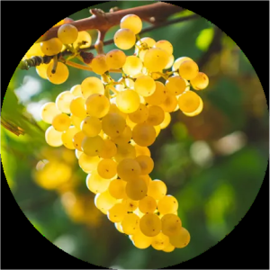
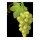
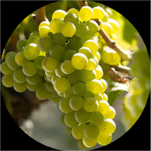
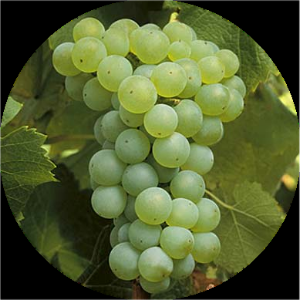
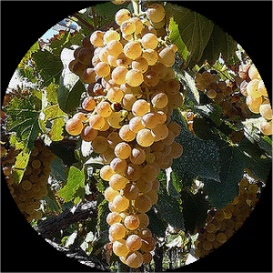
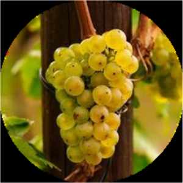
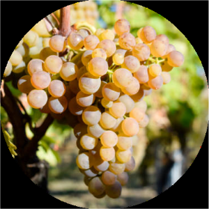
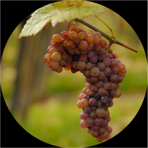

CEPAS BLANCAS
-

Chardonnay La uva blanca de la Borgoña, mucho más versátil que la Pinot Noir, puede crecer y madurar sin dificultad en casi todas partes, excepto en los extremos del mundo vinícola (su brotación temprana puede ponerla en peligro en caso de heladas primaverales). Se ha convertido en la uva para vino blanco más popular del mundo, tal vez porque carece de un sabor propio especialmente fuerte (al contrario que la Riesling, por ejemplo). Es por esa razón que responde tan bien a la fermentación en barrica y/o al envejecimiento en roble.
-

Sauvignon Blanc Intensamente aromática y refrescante, a diferencia de la mayoría de las uvas, es mejor si se bebe relativamente joven. La tierra natal de la Sauvignon Blanc en Francia es el Loira, en especial Sancerre y Pouilly - Fumé y sus alrededores. Puede variar de forma considerable según la añada, y si se cultiva en un clima demasiado cálido puede perder su aroma y su acidez característicos y llegar a resultar demasiado pesada en gran parte de California y Australia. En Burdeos se mezcla tradicionalmente con Sémillon para elaborar tanto blancos secos como dulces.
-

Semillón Es una de las cepas que protagonizó la historia de los vinos blancos en la Argentina. La Semillón es una cepa relativamente fácil de cultivar, vigorosa y resistente a enfermedades, por lo que suele ofrecer buenos rendimientos. Esto la llevó en "su momento" a ser la uva blanca más plantada en el mundo. Es exclente como vino base de espumosos y con cosechas tardias se puede utilizar para la elaboración de vinos dulces.
-

Torrontés Su origen es el resultado de la cruza la Moscatel de Alejandría y la Criolla chica. Da un vino blanco muy aromático, con aromas a flores y uva. Es uno de los pocos vinos en el mundo que al olerlo recuerdan a uva y esto se lo relaciona con los aromas de la cepa Moscatel. En Argentina se encuentran mas de 8100 ha. Las áreas principales son los valles Calchaquíes y el valle de Famatina.
-

Riesling La Riesling es al vino blanco lo que la Cabernet Sauvignon es al tinto: puede dar vinos totalmente distintos en diferentes lugares y es capaz de envejecer de forma inmejorable. Poco valorada y despreciada durante gran parte del siglo XX, está cada vez más de moda. El vino tiende a presentar un aroma intenso con reminiscencias de minerales, flores, lima y miel dependiendo de su origen y su dulzor (con ella se elaboran estupendos vinos botritizados en su Alemania natal, pero debido al calentamiento global también produce buenos vinos firmes y secos, además de estilos más ligeros y más dulces entre esos dos extremos). La Riesling sigue siendo la uva más noble de Alemania y Alsacia, y se da especialmente bien en Australia, Austria, el estado de Nueva York y Michigan.
-

Viognier Variedad de moda, que ha viajado desde su hogar (en Condrieu , al norte del Ródano) hasta casi todos los rincones del mundo vinícola. A menos que madure por completo, no desarrolla su distintivo y seductor aroma, lo que significa que los ejemplos más memorables son relativamente alcohólicos; el truco consiste en mantener también la acidez. California ha sabido tratarla, y existen numerosos ejemplos. Mejor si se bebe joven, cada vez se mezcla más con las otras uvas blancas del Ródano: Rousanne, fresca pero aromática, y Marsanne, grande y almendrada, en especial en el sur de Francia.
-

Pinot Gris Esta uva, cada vez más de moda, tiene su base en Alsacia. Aquí, junto con la Riesling, la Gewürztraminer y la Muscat, se considera una variedad noble, responsable de algunos de los vinos más potentes, pero igualmente suaves, de la región. Esta mutación de piel rosada de la Pinot Noir es prima de la Chardonnay. En Italia se conoce como Pinot Grigio y puede producir algunos blancos secos con carácter, aunque en su mayoría son ácidos e insulsos. Fuera de Italia se conoce como Gris o Grigio. Es una especialidad en Oregón (Estados Unidos), Nueva Zelanda y Australia.
-

Gewurztraminer Uva de nombre impronunciable, es una verdadera maravilla cuando se prueba. Su característico aroma, tan fuerte que le hizo merecedora del prefijo gewürz ("especiada" en alemán ), puede llegar a hacerse pesado, sobre todo si se combina con el abundante azúcar residual del vino. Sin embargo, los mejores ejemplos de Gewürztraminer en Alsacia, donde goza del mayor respeto, poseen un fondo de cuerpo y nervio, además de un final sabroso que impide que resulten empalagosos. La clave es que tengan el punto justo de acidez. Han aparecido algunos buenos ejemplos en la costa este de Nueva Zelanda y en Chile, la Columbia Británica, Oregón y el Alto Adigio (norte de Italia).